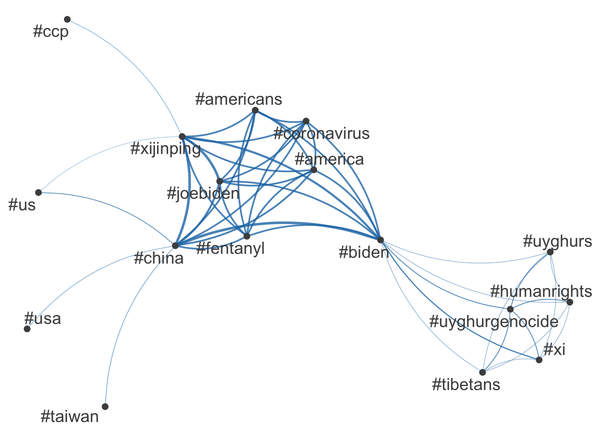
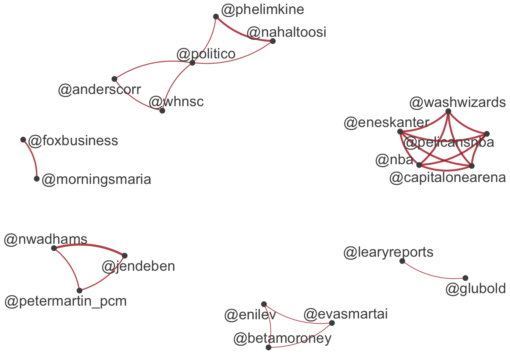
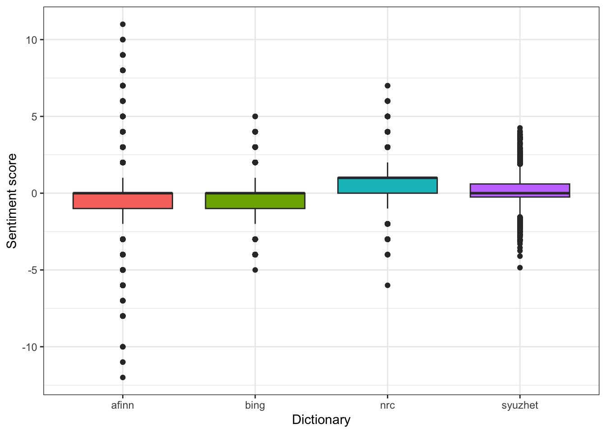
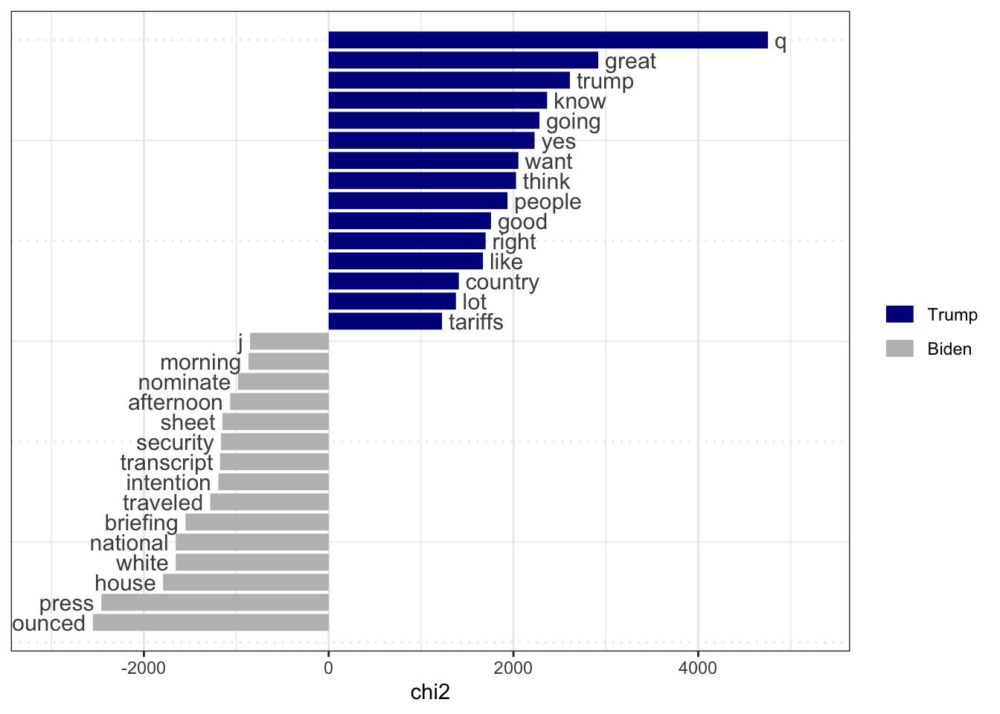
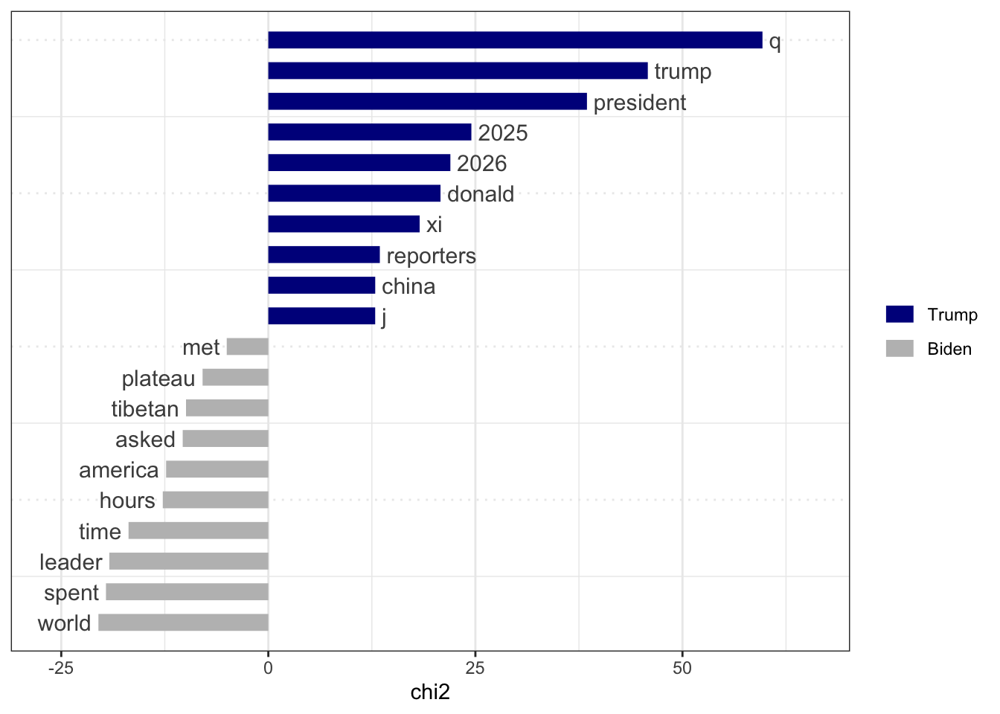
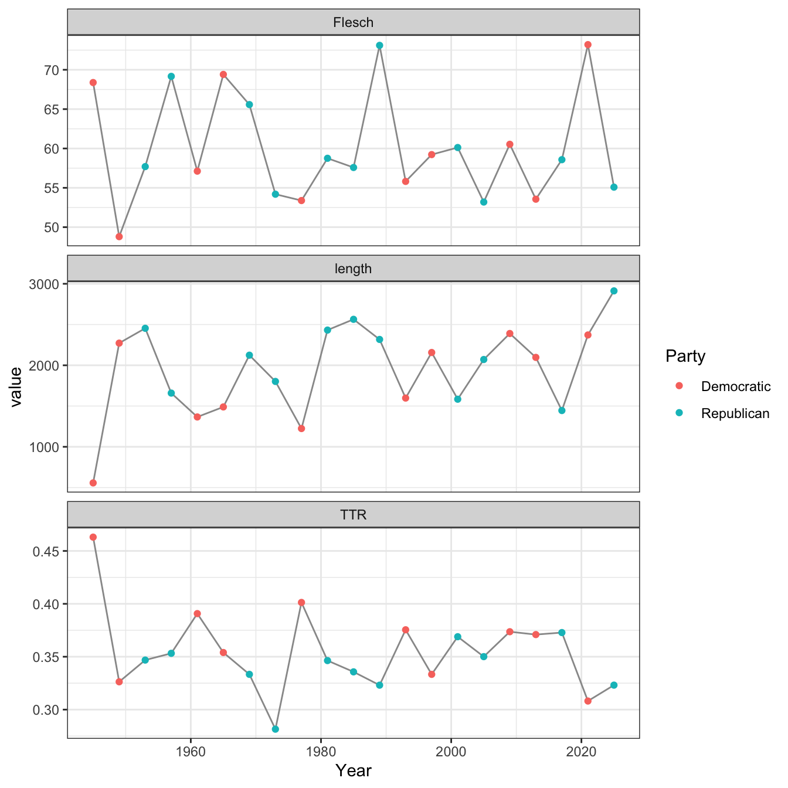
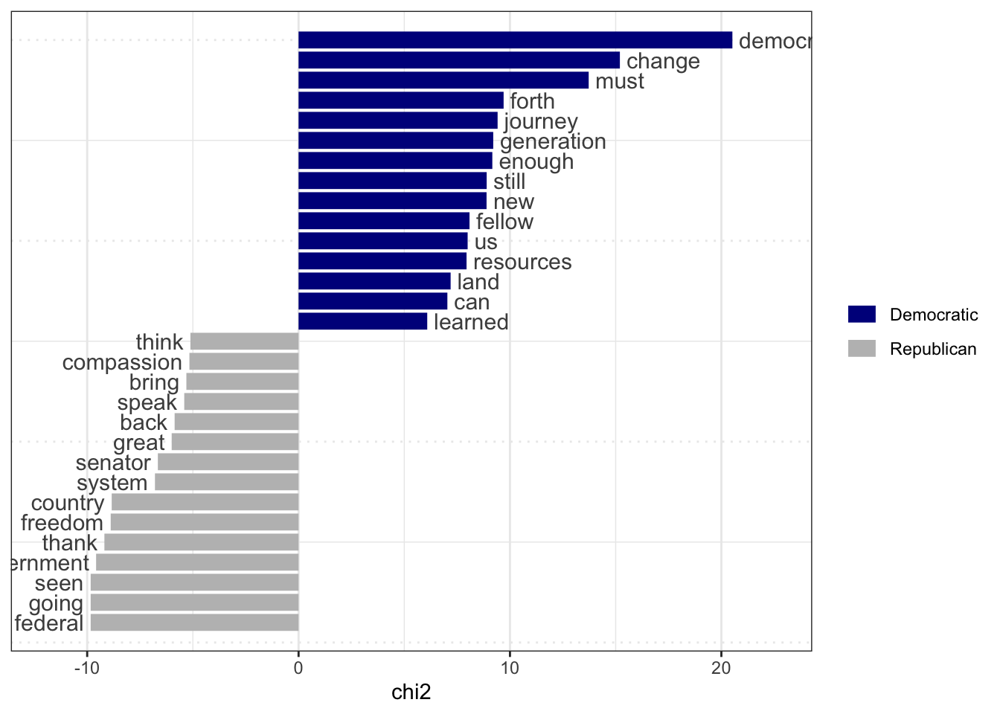
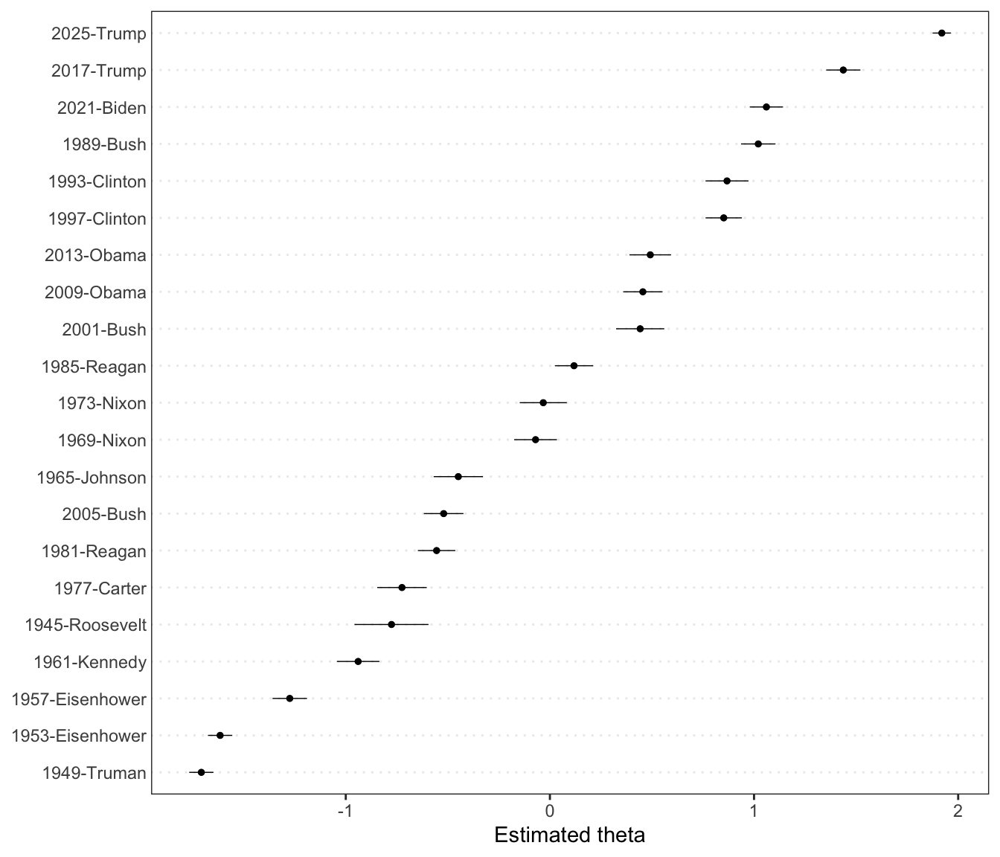

Code
library(quanteda)
library(quanteda.textstats)
library(quanteda.textplots)
library(quanteda.textmodels)
library(readr)
library(dplyr)
library(tidyr)
library(purrr)
library(ggplot2)Cecilia Chen
November 1, 2026
This assignment reads three kinds of text with quanteda: tweets posted during the November 2021 Biden–Xi virtual summit (the public), presidential documents that mention Xi Jinping (the government), and US presidential inaugural addresses since 1945. Each corpus was produced by a different data-generating process, and that process decides what the results below can mean.
[1] 14520 90[1] "2021-11-07 23:45:25 UTC" "2021-11-16 20:10:23 UTC"
FALSE TRUE
5485 9035 The file holds 14520 tweets with 90 columns, posted between November 07 and November 16, 2021. The tweets were collected through the Twitter API by keyword during the summit window. That API no longer offers this access, so the dataset is an archive: it cannot be collected again, and we have to trust the choices of whoever collected it.
[1] 14520 15927 biden xi summit virtual president jinping china chinese
12338 12027 11167 7483 6148 4766 3011 2716
joe monday hold us taiwan biden-xi u.s tensions
2598 2540 2301 2179 1578 1556 1493 1420
china's old friend said
1330 1246 1196 1113 

[,1] [,2] [,3] [,4]
text1 9.924252e-03 3.705342e-03 2.593435e-03 -3.680451e-03
text2 1.245623e-06 -3.845120e-06 3.918437e-06 -2.948803e-06
text3 7.307532e-03 -3.003401e-03 6.386445e-03 -1.007793e-03
text4 9.550429e-03 6.656513e-03 -7.996508e-03 -1.694417e-03
text5 7.806478e-03 -1.847596e-03 1.031998e-02 -1.563609e-03
text6 7.806478e-03 -1.847596e-03 1.031998e-02 -1.563609e-03Dimension 1 : biden xi summit virtual president jinping chinese joe monday hold
Dimension 2 : president jinping chinese virtual monday joe summit us hold tensions
Dimension 3 : summit virtual biden-xi #biden told #china #xijinping #joebiden relations exchanged
Dimension 4 : old friend xi president candid discussion remarks started countries told Several tweets receive identical scores on all four dimensions (for example, the fifth and sixth tweets). They are the same text posted again, mostly retweets. Repeated text means a few voices are counted many times.
library(syuzhet)
sent <- tibble(
syuzhet = get_sentiment(sum_twt, method = "syuzhet"),
bing = get_sentiment(sum_twt, method = "bing"),
afinn = get_sentiment(sum_twt, method = "afinn"),
nrc = get_sentiment(sum_twt, method = "nrc")
)
sent |>
pivot_longer(everything(), names_to = "method", values_to = "score") |>
ggplot(aes(method, score, fill = method)) +
geom_boxplot(show.legend = FALSE) +
labs(x = "Dictionary", y = "Sentiment score") +
theme_bw()
All four medians sit near zero, but the spread differs widely: AFINN runs far beyond Bing on both ends. The “sentiment” of the same tweet depends on which dictionary we chose.
The Compilation of Presidential Documents (CPD) on GovInfo was searched through the API for documents mentioning “Xi Jinping” published since 20 January 2021. The search returned 351 documents across four pages of 100. Each document’s full text was then downloaded as HTML and cached locally. The code below shows the collection; it is not re-run when the document is rendered.
library(httr2)
body <- list(
query = 'collection:(CPD) AND "Xi Jinping" AND publishdate:range(2021-01-20,)',
pageSize = 100, offsetMark = "*",
sorts = list(list(field = "publishdate", sortOrder = "ASC"))
)
search_page <- function(body) {
request("https://api.govinfo.gov/search") |>
req_url_query(api_key = Sys.getenv("GOVINFO_API_KEY")) |>
req_body_json(body) |> req_perform() |> resp_body_json()
}
found <- search_page(body)
all_results <- found$results
next_mark <- found$offsetMark
while (length(all_results) < found$count && !is.null(next_mark)) {
body$offsetMark <- next_mark
page <- search_page(body)
all_results <- c(all_results, page$results)
next_mark <- page$offsetMark
Sys.sleep(1)
}
docs <- tibble(
packageId = map_chr(all_results, "packageId"),
title = map_chr(all_results, "title"),
date = as.Date(map_chr(all_results, "dateIssued"))
)
get_cpd <- function(id) {
path <- file.path("data/cpd_xi_htm", paste0(id, ".htm"))
if (file.exists(path)) return("cached")
tryCatch({
request(paste0("https://api.govinfo.gov/packages/", id, "/htm")) |>
req_url_query(api_key = Sys.getenv("GOVINFO_API_KEY")) |>
req_perform(path = path)
Sys.sleep(0.5)
"ok"
}, error = function(e) "error")
}
docs$fetch_status <- map_chr(docs$packageId, get_cpd)
write.csv(docs, "data/cpd_xi_log.csv", row.names = FALSE) documents unique_ids
351 351 # A tibble: 2 × 2
fetch_status n
<chr> <int>
1 cached 1
2 ok 350[1] "2021-03-17" "2026-10-01"# A tibble: 2 × 2
admin n
<chr> <int>
1 Biden 183
2 Trump 168Each CPD document has three layers: what the president said, an editor’s note (“In his remarks, he referred to…”), and an index of names and subjects added by the Office of the Federal Register. The editor works like a court historian: recording, annotating and cataloguing the president’s words, but not speaking for him. I removed the style header, the editor’s note and the index to keep only the president’s words.
docs$body <- docs$text |>
sub("^.*?(Administration of)", "\\1", x = _) |>
sub("(N\\s?OTE\\s?:|Categories:).*$", "", x = _)
xi_all <- kwic(tokens(corpus(docs, docid_field = "packageId", text_field = "text")),
pattern = phrase("Xi Jinping"))
cpd_corp <- corpus(docs, docid_field = "packageId", text_field = "body")
cpd_toks <- tokens(cpd_corp, remove_punct = TRUE)
xi_body <- kwic(cpd_toks, pattern = phrase("Xi Jinping"), window = 15)
tibble(
mentions_all_text = nrow(xi_all),
mentions_body_only = nrow(xi_body),
docs_selected = nrow(docs),
docs_body_mentions = n_distinct(xi_body$docname)
)# A tibble: 1 × 4
mentions_all_text mentions_body_only docs_selected docs_body_mentions
<int> <int> <int> <int>
1 721 237 351 180Of 721 mentions of “Xi Jinping”, only 237 appear in what the president said. And only 180 of the 351 documents mention him in the body at all. The other 171 entered the corpus because the editor listed his name in a note or the index.
docname
1 DCPD-202100960
2 DCPD-202501059
3 DCPD-202501076
4 DCPD-202200303
5 DCPD-202501043
6 DCPD-2024CHECKLIST
7 DCPD-2024DIGEST
8 DCPD-202500472
9 DCPD-202500345
10 DCPD-202501077
pre
1 a reaction to your meeting with President Xi last night The President's Meeting With President
2 Can you say what companies The President I'd rather not say You'll see tomorrow President
3 Administration of Donald J Trump 2025 Remarks During a Greeting With President
4 said the same thing For how long For how long And I also indicated to
5 long one It's going to be a very long trip right Okay What's up President
6 press gaggle by National Security Adviser Jacob J Sullivan on the President's meeting with President
7 Bobby J Wormuth Christine E Wray Christopher A Wright Beverly Wright S.M II Wu Michelle
8 for you know obvious reasons but I would say 10 percent is a floor President
9 from the Chinese in response to your tariffs and are you planning to meet with
10 Administration of Donald J Trump 2025 Remarks Prior to a Meeting With President
keyword
1 Xi Jinping
2 Xi Jinping
3 Xi Jinping
4 Xi Jinping
5 Xi Jinping
6 Xi Jinping
7 Xi Jinping
8 Xi Jinping
9 Xi Jinping
10 Xi Jinping
post
1 of China Q Mr President can we have a reaction to your meeting with President
2 of China TikTok Q Are you planning to sign the final deal on TikTok on
3 of China and an Exchange With Reporters in Busan South Korea October 30 2025 U.S
4 that I was going to pull together the Quad Australia India Japan and the United
5 of China China-U.S Trade Q What are you expecting from your meeting with President Xi
6 of China in Lima Peru Fact sheet President Biden Marks Historic Climate Legacy With Trip
7 Yearwood Trisha Yellen Janet L Yess Tanner Yoon Suk Yeol Yoon Jasmine H Young Jeffrey
8 of China Q Are you wanting to get to the table with China or are
9 about trade anytime soon The President No they took that rhetoric back as you know
10 of China in Busan South Korea October 30 2025 President Trump Well thank you very
admin n
1 Biden 173
2 Trump 64
.Renviron (not shown, not committed).collection:(CPD) AND "Xi Jinping" AND publishdate:range(2021-01-20,), sorted by publish date, collected November 7, 2026.data/cpd_xi_log.csv) only. The documents themselves are kept locally and excluded from the repository. Year President FirstName Party
19 2017 Trump Donald J. Republican
20 2021 Biden Joseph R. Democratic
21 2025 Trump Donald J. Republican
Democratic Democratic-Republican Federalist
10 0 0
none Republican Whig
0 11 0 inaug_toks <- tokens(inaug, remove_punct = TRUE)
inaug_dfm <- dfm(inaug_toks)
stats <- data.frame(
Year = docvars(inaug, "Year"),
President = docvars(inaug, "President"),
Party = docvars(inaug, "Party"),
length = ntoken(inaug_toks),
TTR = textstat_lexdiv(inaug_dfm, measure = "TTR")$TTR,
Flesch = textstat_readability(inaug, measure = "Flesch")$Flesch
)
stats |>
pivot_longer(c(length, TTR, Flesch), names_to = "measure", values_to = "value") |>
ggplot(aes(Year, value)) +
geom_line(color = "grey60") +
geom_point(aes(color = Party)) +
facet_wrap(~ measure, scales = "free_y", ncol = 1) +
theme_bw()
The latest address in data_corpus_inaugural is 2025-Trump, so no address is missing.

Is “great” a Republican word or one president’s habit?
1945-Roosevelt 1949-Truman 1953-Eisenhower 1957-Eisenhower 1961-Kennedy
0.21 0.31 0.31 0.30 0.31
1965-Johnson 1969-Nixon 1973-Nixon 1977-Carter 1981-Reagan
0.38 0.38 0.38 0.40 0.43
1985-Reagan 1989-Bush 1993-Clinton 1997-Clinton 2001-Bush
0.45 0.45 0.43 0.43 0.47
2005-Bush 2009-Obama 2013-Obama 2017-Trump 2021-Biden
0.44 0.43 0.42 0.63 0.48
2025-Trump
1.00 row col
1985-Reagan 11 10
1981-Reagan 10 11[1] 0.6885376
[1] 0.8552044 word beta
739 aided -4.660321
243 major -4.329991
324 philosophy -4.329991
375 established -3.945934
610 scientific -3.945934
636 development -3.945934
644 technical -3.945934
466 basis -3.704852
555 joint -3.704852
619 conditions -3.704852 word beta
4573 panama 4.456807
4392 entire 3.935456
4410 emergency 3.935456
4413 applause 3.935456
4424 that’s 3.935456
4431 mandate 3.935456
4436 america’s 3.935456
4492 prices 3.935456
4570 mckinley 3.935456
4618 impossible 3.935456Three corpora, three data-generating processes. No corpus here is simply “what people said.” Each passed through a series of gates before it reached me, and each gate removed someone.
| Tweets (Part 1) | Presidential documents (Part 2) | Inaugural addresses (Part 3) | |
|---|---|---|---|
| Who produced it | Twitter users | The president (often written by staff); recorded, annotated and indexed by Federal Register editors | Presidents and their speechwriters |
| For whom | Followers and the online public, often just to express a view | A live audience and reporters; then the public record | The nation and the world, at a ceremony |
| What selected it | Keywords, the summit window, and the original collector | My query and date range, plus the editor’s index | Tradition (every inauguration), plus my 1945 cutoff |
| Can it be collected again? | No: the API access is gone | Yes, if the query and date are recorded | Yes |
| Claims it can support | Discussion among people who tweeted with these keywords during the summit | How presidents talked about Xi in public | How the ceremonial speech changes across speakers and time |
The public. The summit tweets cannot speak for “the public.” Only people who use Twitter, who tweet about politics, who used the collection keywords, and who did so in that week made it into the file. Retweets then amplify a few voices. Even the sentiment of these tweets is not fixed: four dictionaries scored the same tweets with very different spreads.
The government. The presidential documents were selected by my query, but also by an editor. About two thirds of all mentions of “Xi Jinping” were written by the Federal Register’s editors in notes and indexes, and about half of the documents entered the corpus only because the editor listed his name. Comparing full documents mostly separated the administrations by document type: Trump’s documents carry more press questions (“q”, “know”, “going”), Biden’s more formal announcements (“announced”, “fact sheet”). Only the words around each mention showed how each president talked about Xi: Biden returns to a personal story (the hours they spent together, a trip to the Tibetan Plateau), while Trump mentions him in meetings and in answers to reporters. These are public statements, not private attitudes.
Inaugural addresses. Keyness by party suggests Democrats speak of change and a new generation, Republicans of freedom, government and greatness. But party is the weakest signal. The most similar pair of addresses is Reagan’s two (cosine 0.69), and Trump’s 2025 address is closest to his own 2017 address. Similarity rises over time regardless of party: Biden’s address is closer to Trump’s than Eisenhower’s is. Some “Republican” words are ceremony rather than ideology (thanking senators), and checking “great” with kwic() showed several Republican presidents use it, not only Trump.
What Wordfish measures. Wordfish assumes each document sits at one position on a single latent dimension, and that how often each word appears depends on that position. It is unsupervised: it finds the main contrast in word use but does not name it. That is also why dir must be set: the model can identify the dimension only up to its direction, so I fixed 1945-Roosevelt on the left and 2025-Trump on the right. Three pieces of evidence suggest the dimension is time, not left–right ideology: the addresses line up roughly by year with parties mixed together; the positions correlate with year at 0.86; and the words that pull documents to each end are early Cold War vocabulary (aided, scientific, Europe) versus issues of the 2025 address (Panama, emergency, prices). Even typography matters: curly apostrophes (“that’s”) appear only in recent transcripts, so formatting choices enter the model too. To claim the dimension is ideology, I would need to validate it against an outside measure, such as party or roll-call positions, and it fails that test here.